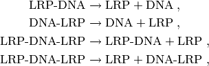
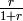
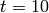
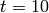

pap_pili : pap-pili epigenetic switch¶
Overview¶
The module cmepy.models.pap_pili defines a model of the pap-pili epigenetic switch system from Munksy and Khammash [MK06].
This system consists of 10 reactions:
![\textrm{LRP} + \textrm{DNA} & \xrightarrow{} \textrm{LRP-DNA} \; , \\
\textrm{LRP-DNA} & \xrightarrow{} \textrm{LRP} + \textrm{DNA} \; , \\
\textrm{DNA} + \textrm{LRP} & \xrightarrow{} \textrm{DNA-LRP} \; , \\
\textrm{DNA-LRP} & \xrightarrow{} \textrm{DNA} + \textrm{LRP} \; , \\
\textrm{LRP-DNA} + \textrm{LRP} & \xrightarrow{} \textrm{LRP-DNA-LRP} \; , \\
\textrm{LRP-DNA-LRP} & \xrightarrow{} \textrm{LRP-DNA} + \textrm{LRP} \; , \\
\textrm{LRP} + \textrm{DNA-LRP} & \xrightarrow{} \textrm{LRP-DNA-LRP} \; , \\
\textrm{LRP-DNA-LRP} & \xrightarrow{} \textrm{LRP} + \textrm{DNA-LRP} \; , \\
\star & \xrightarrow{} \textrm{PapI} \; , \\
\textrm{PapI} & \xrightarrow{} \star \; .](../_images/math/28e900a248e18d68bab1e0f60f046b4f30168475.png)
The propensities of many of these reactions are non-elementary: the production of PapI is catalysed by LRP-DNA, while the propensities of the four reactions

that is, the reactions where LRP unbinds from DNA,
are all multiplied by the factor , where  denotes
the copy count of the PapI species.
denotes
the copy count of the PapI species.
For the grim details of the reaction propensity functions and rate constants, either inspect the source code (see below) or refer to Munksy and Khammash [MK06].
Running the model¶
To solve this model in CmePy and plot some results, simply open the Python interpreter and type:
>>> from cmepy.models import pap_pili
>>> pap_pili.main()
This creates the pap-pili epigentic switch model with 5 initial copies of DNA,
5 initial copies of PapI, 100 initial copies of LRP, and zero initial copies
of all other species. The model is solved from  to 
using 100 equally-spaced time steps.
to 
using 100 equally-spaced time steps.
After solving the model, this script will display the following plots:


Source¶
"""
Example implementation of the pap-pili epigenetic switch model.
This is the second example from Munsky & Khammash :
@article{munsky2006finite,
title={{The finite state projection algorithm for the
solution of the chemical master equation}},
author={Munsky, B. and Khammash, M.},
journal={The Journal of chemical physics},
volume={124},
pages={044104},
year={2006}
}
"""
import cmepy.model
from cmepy.util import non_neg
def gen_states(max_papi = 100, dna_count = 1):
"""
generates reachable states for pap-pili epigenetic switch model.
"""
for dna in xrange(dna_count + 1):
for dna_lrp in xrange(dna_count - dna + 1):
for lrp_dna in xrange(dna_count - dna - dna_lrp + 1):
for papi in xrange(max_papi + 1):
yield (dna, dna_lrp, lrp_dna, papi)
return
def create_model(max_papi = 100,
papi_count = 5,
dna_count = 1,
lrp_count = 100):
"""
creates pap-pili epigenetic switch model.
"""
# define mappings from state space to species counts
dna = lambda *x : x[0]
dna_lrp = lambda *x : x[1]
lrp_dna = lambda *x : x[2]
lrp_dna_lrp = lambda *x : non_neg(dna_count - x[0] - x[1] - x[2])
lrp = lambda *x :non_neg(
lrp_count - 2*lrp_dna_lrp(*x) - dna_lrp(*x) - lrp_dna(*x)
)
papi = lambda *x : x[3]
def f(r):
return r / (1.0 + r)
# define reaction propensities
props = (
lambda *x : 1.0 * dna(*x) * lrp(*x),
lambda *x : (2.5 - 2.25*f(papi(*x))) * lrp_dna(*x),
lambda *x : 1.0 * dna(*x) * lrp(*x),
lambda *x : (1.2 - 0.20 * f(papi(*x))) * dna_lrp(*x),
lambda *x : 0.01 * lrp_dna(*x) * lrp(*x),
lambda *x : (1.2 - 0.20 * f(papi(*x))) * lrp_dna_lrp(*x),
lambda *x : 0.01 * dna_lrp(*x) * lrp(*x),
lambda *x : (2.5 - 2.25 * f(papi(*x))) * lrp_dna_lrp(*x),
lambda *x : 10.0 * lrp_dna(*x),
lambda *x : 1.0 * papi(*x),
)
# define corresponding reaction state space offsets
transitions = (
(-1, 0, 1, 0), # LRP + DNA -> LRP-DNA
(1, 0, -1, 0), # LRP-DNA -> LRP + DNA
(-1, 1, 0, 0), # DNA + LRP -> DNA-LRP
(1, -1, 0, 0), # DNA-LRP -> DNA + LRP
(0, 0, -1, 0), # LRP-DNA + LRP -> LRP-DNA-LRP
(0, 0, 1, 0), # LRP-DNA-LRP -> LRP-DNA + LRP
(0, -1, 0, 0), # LRP + DNA-LRP -> LRP-DNA-LRP
(0, 1, 0, 0), # LRP-DNA-LRP -> LRP + DNA-LRP
(0, 0, 0, 1), # * -> PapI
(0, 0, 0, -1), # PapI -> *
)
species_names = (
'DNA',
'DNA-LRP',
'LRP-DNA',
'LRP-DNA-LRP',
'LRP',
'PapI',
)
species_counts = (
dna,
dna_lrp,
lrp_dna,
lrp_dna_lrp,
lrp,
papi,
)
return cmepy.model.create(
name = 'pap-pili epigenetic switch',
species = species_names,
species_counts = species_counts,
propensities = props,
transitions = transitions,
shape = (dna_count+1, )*3 + (max_papi+1, ),
initial_state = (dna_count, 0, 0, papi_count)
)
def main():
import numpy
import cmepy.solver
import cmepy.recorder
import cmepy.domain
dna_count = 5
m = create_model(dna_count = dna_count)
domain_states = cmepy.domain.from_iter(gen_states(dna_count = dna_count))
solver = cmepy.solver.create(
m,
sink = True,
domain_states = domain_states
)
recorder = cmepy.recorder.create(
(m.species,
m.species_counts)
)
time_steps = numpy.linspace(0.0, 10.0, 101)
for t in time_steps:
solver.step(t)
p, p_sink = solver.y
print 't = %g; p_sink = %g' % (t, p_sink)
recorder.write(t, p)
cmepy.recorder.display_plots(recorder, title = m.name)
References
| [MK06] | (1, 2) Munsky, B. and Khammash, M., The finite state projection algorithm for the solution of the chemical master equation, Journal of Chemical Physics (2006), Vol 124. |